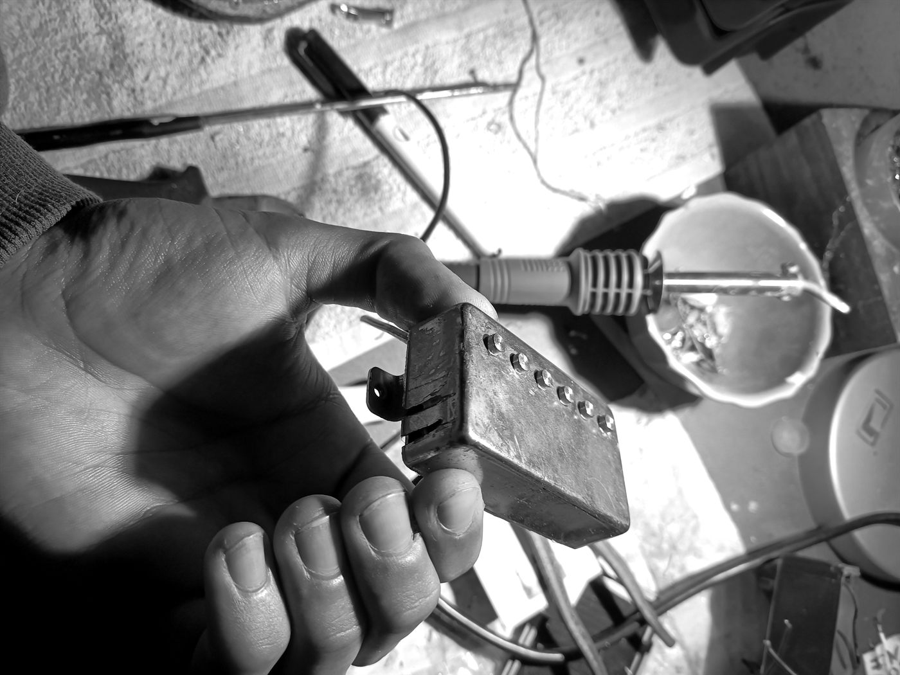

Personal projects
SG Custom
Re-carving the bevels, refinishing and artificially ageing an SG replica to bring it as close as possible to a genuine 1961 Gibson SG.
Read the story →
Folk-Bucker
Installing an electric-guitar humbucker, volume control and switching inside an acoustic folk guitar, inspired by Nirvana's MTV Unplugged sound.
Read the story →
Sustainer
An active feedback circuit that drives the strings electromagnetically, letting a note ring out indefinitely — an op-amp, filters and a driver coil.
Read the story →Academic work
Reports and projects from my MSc in Music and Acoustic Engineering — audio signal processing, machine learning for audio, electroacoustics, and acoustic modelling. Each entry comes with its report and, where available, the code.
Latest activities
Loading activities…
Gallery
Let's get in touch
Whether it's acoustics, audio engineering, guitar electronics or an internship opportunity — the best way to reach me is on LinkedIn.